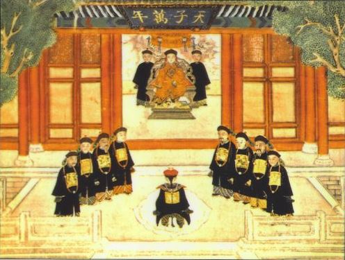
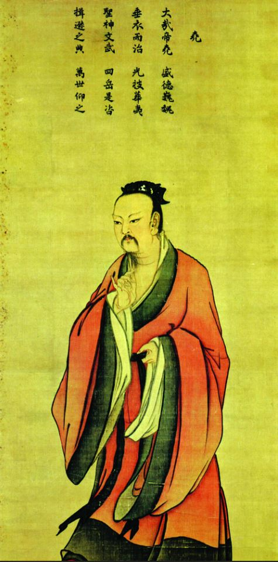
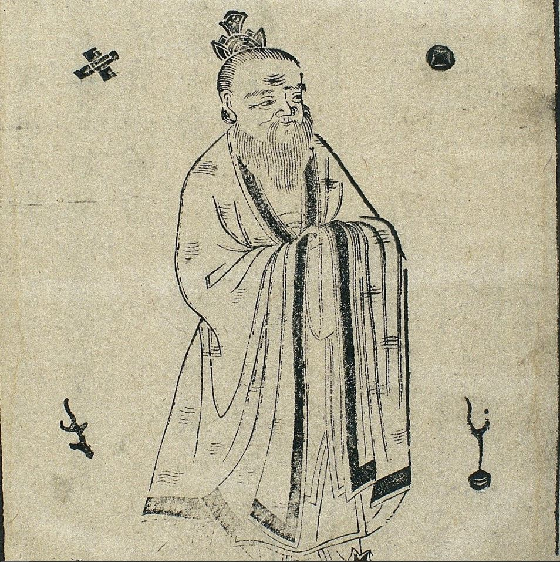

Mandatos do céu
Entenda como o Mandato do Céu legitimava governantes na China, ligando autoridade à moralidade e justiça.

Filho do Céu
Descubra o Rei como Filho do Céu, um mediador entre os reinos humano e divino.

Imortalidade
Explore a busca espiritual pela imortalidade na tradição e mitologia chinesa.